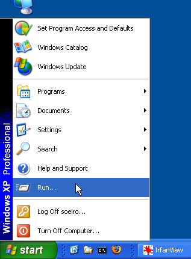
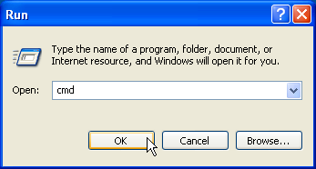

[Documentation Home]
[Installation Home]
Alphalinc Software Development Environment (ASDE) - Bazaar installation
- Go to \\loira\Softwares\Desenvolvimento\Bazaar
(or download it from http://bazaar-vcs.org) and copy the
bzr-setup-1.14.1-1.exe file to your computer.
|
Figure 1 - Software folder
|
After copying it, double click on the installer (i.e. bzr-setup-1.14-1.exe). Follow instructions until you get to the component selection page.
Choose Custom installation from the drop down list of options and make sure that the TortoiseBZR
is not selected.
Although the TortoiseBZR plugin provides a nice Graphical User Interface for
Bazaar commands in Windows Explorer, it also makes Windows Explorer much slower than normal. If you want to
have a look of the TortoiseBZR plugin, leave the option selected. At any time you can uninstall Bazaar and
install it again with the the Tortoise option (Bazaar branches and repositories are not touched when Bazaar is
uninstalled).
Click on the Next button and continue the installation.
|
Figure 2 - Custom installation
|
- Let the Bazaar installer add it to the PATH environment variable. You can also
view the TurtoiseBZR Readme if you wish. Click on Next and all the remaining options to proceed with
the installation.
|
Figure 3 - Add Bazaar to the PATH variable
|
- It is possible that Bazaar raises the following error during the installation:
"Unable to execute file: C:\Program Files\Bazaar\bzr_postinstall.exe
CreateProcess failed; code 14001. This application has failed to start because
the application configuration is incorrect. Reinstalling the application may fix this problem.".
At this url http://osdir.com/ml/bazaar/2010-09/msg00323.html and
http://msdn.microsoft.com/en-us/library/ms235342.aspx you will find an explanation about
this error, indicating this is due to the lack of Visual C++ files.
In order to correct this, go to \\loira\softwares\SistemaOperacional\Windows (or download
it from http://www.microsoft.com/downloads/details.aspx?FamilyID=9b2da534-3e03-4391-8a4d-074b9f2bc1bf)
and copy the vcredist_x86.exe file to your computer. Run that executable patch and install
it. Finally, run the Bazaar installation procedure again.
- Open a command line to test Bazaar installation.
|

Figure 4 - Start menu
|
|

Figure 5 - "Open" field
|
|

Figure 6 - Command line window
|
- Test the Bazaar installation by typing "bzr --version" (bzr followed by one
space followed by two dashes followed by version). Bzr is the Bazaar command.
The command should print out some information, as shown in the figure 7. If any error
message is displayed instead, go back and start over the Bazaar instalation.
|
Figure 7 - Add Bazaar to the PATH variable
|
- Now tell Bazaar who you are (your email at Diclinc). Type bzr whoami your.name@disclinc.com.
This email will be used in the repository history to identify your changes.
|
Figure 8 - Tell Bazzaar who you are
|
- Finally, check if your email was correctly recorded. Type bzr whoami.
|
Figure 9 - Bazzaar tells the id of the current user
|
You have just finished this step. Please proceed to Install Web server step.